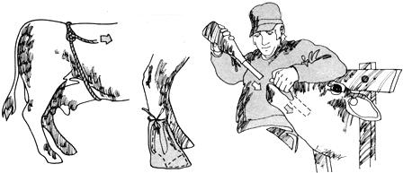

Esther Shuttleworth-who's been known to raise, keep and milk more than just a few cows in her day - has absorbed just as much information about the critters as has Hank Rate. Most of her rules of thumb jibe with Hank's but, as might be expected, a few do not. Here's some added tips or divergent opinion from Esther.
My father - a well-known stock trader in the Muncie, Indiana area - taught me the easiest way of all to turn the average family cow dry: just stop milking her. Don't agonize about tapering off and don't fool with her feed. Just stop milking. Only if the cow is a very heavy milker will you have to cut down a little and, even then, milking her every other milking for a few days or only partly milking her (taking, say, one gallon from a five gallon producer) is all the tapering you'll need. And, by the way . . . when I do milk, I milk "thumbs in".
If you keep hay in a manger where your cow or cows can reach it year-round, they won't bloat nearly as bad as when they have no access to such dry feed. But never take a cow that's been eating only dry feed and suddenly turn her out on frosted or wet pasture (especially bird's-foot trefoil, ladino or clover). The sudden change can kill cattle quicker than you'll believe.
Minor bloat is nothing to worry about and you can treat moderately severe bloat by drenching a cow with a mixture of either (1) a pint of linseed oil in a pint of water or (2) one cup of kerosene with a pint and a half of water. Shake either mixture vigorously in a big ginger ale bottle, hold the stricken animal's head up and nose closed and stick the neck of the bottle down the side of the cow's mouth between her lip and the outside of her teeth (don't let her chomp on the glass). Stroke the animal's throat to make her swallow. Call a vet and call him fast for major bloat that puts - or even threatens to put - a cow down.
Bloody scours in a calf should be treated by a veterinarian but the simplest and most effective cure for ordinary calf scours is three eggs, three or four times a day. Break the eggs in a plastic drinking cup, do not stir and pour them down the calf as it sucks your fingers. Beating the eggs and putting them into the baby's milk won't do any good at all. Our vet says the eggs will do even more good if you feed calf shells and all . . ..but I wouldn't recommend this the first few times you try it as you might cut the baby's mouth and throat with the shells.
At one time we had to have nearly 10% of our fresh cows cleaned by the vet after they calved. This percentage dropped to near zero after we began feeding mineral free choice to the cattle. If you haven't been feeding mineral to your cow or cows, buy a sack and keep the feed in front of them until they "catch up" . . . thereafter, a block of mineral salt in front of them year-round will supply their needs.
Sometimes when you move onto a new farm, your cows will get foot rot from the animals that have been there before. It happened to us and I treated the disease by sewing up boots of two to four thicknesses of denim. I'd put a small handful of flaxseed meal into a pan, stir in enough water to make a runny mixture, bring to a boil, let bubble and thicken. Then I'd pour the mixture into the boot while still fairly hot and put it on the cow's foot to cool and draw out the infection. At the next milking I'd remove the boot and pack the crack in the affected hoof with a salve of powdered sulfur mixed in lard or Crisco.
If your cow kicks when you milk her, don't fight back. That'll only make her nervous and intensify the problem. Just tie a strap or rope very, very tightly around her middle immediately in front of the hips and udder. The cow won't particularly like it . . . but she won't want to kick much anymore either. Remove the rope when you've finished milking.
Cold - really intense cold - won't hurt a fresh baby calf but drafts will give one pneumonia in just a few hours. If you catch it fast enough, stir two tablespoons of whiskey and two or three tablespoons of sugar into a cup of warm water and get the mixture down the sick baby (but not down its windpipe). Make the calf a thick bed of straw and then cover the baby with another heavy layer of straw. It should be up and around in a day or two.
We've found that almost any medication which works for people will work for animals if the dose is scaled up in proportion to body weight . . . and I've doctored our livestock with Pepto-Bismol and many other drugstore remedies.
|
 |
|
|